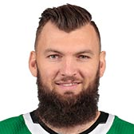
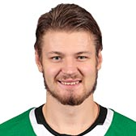
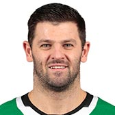
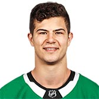
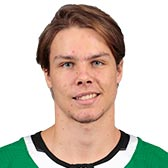
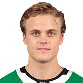
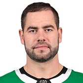
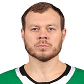

STARS
| Photo |
Name |
Number |
Position |
Shot |
Height |
Weight |
Birthday |
Hometown |
|
Jamie Benn |
14 |
LW |
L |
6' 2" |
205 |
Jul 18, 1989 |
Victoria, BC, CAN |
|
Andrew Cogliano |
7 |
C |
L |
5' 10" |
177 |
Jun 18,1987 |
Toronto, ON, CAN |
|
Blake Comeau |
15 |
LW |
R |
6' 1" |
200 |
Feb 18, 1986 |
Meadow Lake, SK, CAN |
|
Erik Condra |
27 |
RW |
R |
5' 11" |
185 |
Aug 06,1986 |
Trenton, MI, USA |
|
Jason Dickinson |
16 |
C |
L |
6' 2" |
200 |
Jul 4, 1995 |
Georgetown, ON, CAN |
|
Justin Dowling |
37 |
C |
L |
5' 10" |
180 |
Oct 1, 1990 |
Calgary, AB, CAN |
|
Radek Faksa |
12 |
C |
L |
6' 3" |
220 |
Jan 9, 1994 |
Vitkov, CZE |
|  |
Martin Hanzal |
11 |
C |
L |
6' 6" |
230 |
Feb 20, 1987 |
Pisek, CZE |
|
Mattias Janmark |
13 |
C |
L |
6' 1" |
195 |
Dec 8, 1992 |
Stockholm, SWE |
|  |
Valeri Nichushkin |
43 |
RW |
L |
6' 4" |
210 |
Mar 4, 1995 |
Chelyabinsk, RUS |
|
Tyler Pitlick |
18 |
C |
R |
6' 2" |
200 |
Nov 1, 1991 |
Minneapolis, MN, USA |
|  |
Alexander Radulov |
47 |
RW |
L |
6' 1" |
205 |
Jul 5, 1986 |
Nizhny Tagil, RUS |
|
Brett Ritchie |
25 |
RW |
R |
6' 4" |
220 |
Jul 1, 1993 |
Orangeville, ON, CAN |
|
Tyler Seguin |
91 |
C |
R |
6' 1" |
200 |
Jan 31, 1992 |
Brampton, ON, CAN |
|
Jason Spezza |
90 |
C |
R |
6' 3" |
215 |
Jun 13, 1983 |
Toronto, ON, CAN |
| Photo |
Name |
Number |
Shot |
Height |
Weight |
Birthday |
Hometown |
|  |
Connor Carrick |
5 |
R |
5' 11" |
192 |
Apr 13, 1994 |
Orland Park, IL, USA |
|
Taylor Fredun |
42 |
R |
6' 1" |
201 |
Jun 04, 1988 |
Edmonton, AB, CAN |
|  |
Miro Heiskanen |
4 |
L |
6' 1" |
185 |
Jul 18, 1999 |
Espoo, FIN |
|  |
Julius Honka |
6 |
R |
5' 11" |
180 |
Dec 3, 1995 |
Jyväskylä, FIN |
|
Stephen Johns |
28 |
R |
6' 4" |
225 |
Apr 18, 1992 |
Ellwood City, PA, USA |
|
John Klingberg |
3 |
R |
6' 2" |
180 |
Aug 14, 1992 |
Gothenburg, SWE |
|
Esa Lindell |
23 |
L |
6' 3" |
215 |
May 23, 1994 |
Vantaa, FIN |
|
Marc Methot |
33 |
L |
6' 4" |
230 |
Jun 21, 1985 |
Ottawa, ON, CAN |
|  |
Roman Polak |
45 |
R |
6' 2" |
240 |
Apr 28, 1986 |
Ostrava, CZE |
| Photo |
Name |
Number |
Height |
Weight |
Birthday |
Hometown |
|
Ben Bishop |
30 |
6' 7" |
215 |
Nov 21, 1986 |
Denver, CO, USA |
|  |
Anton Khudobin |
35 |
5' 11" |
200 |
May 7, 1986 |
Ust-Kamenogorsk, KAZ |